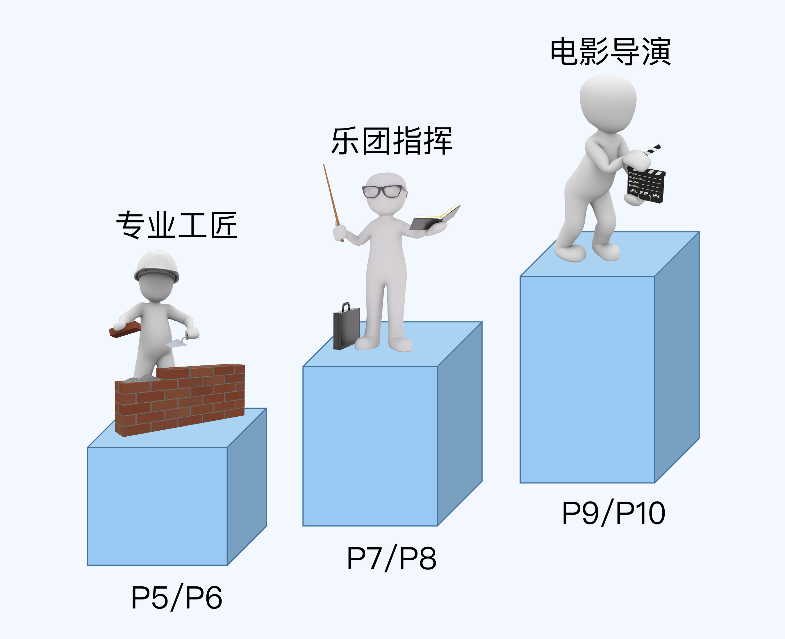
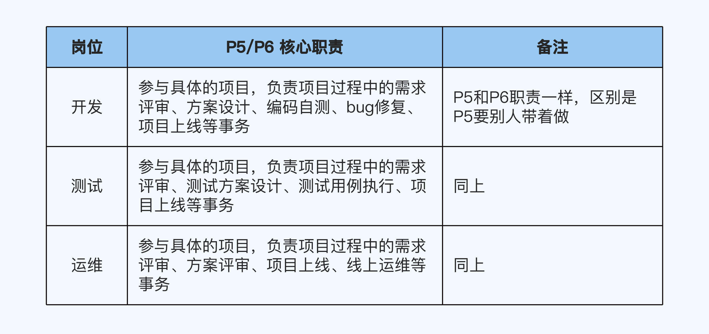
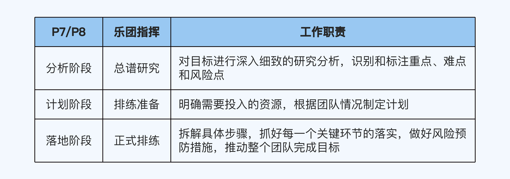
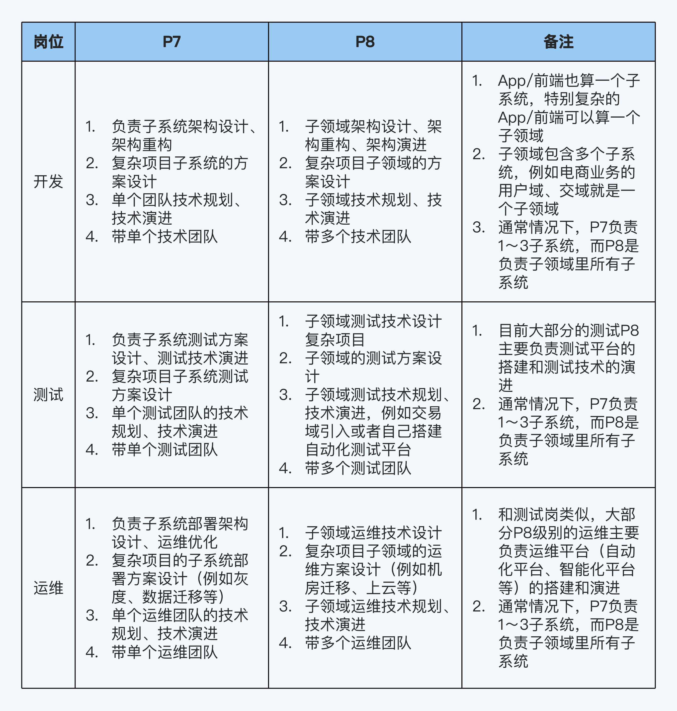
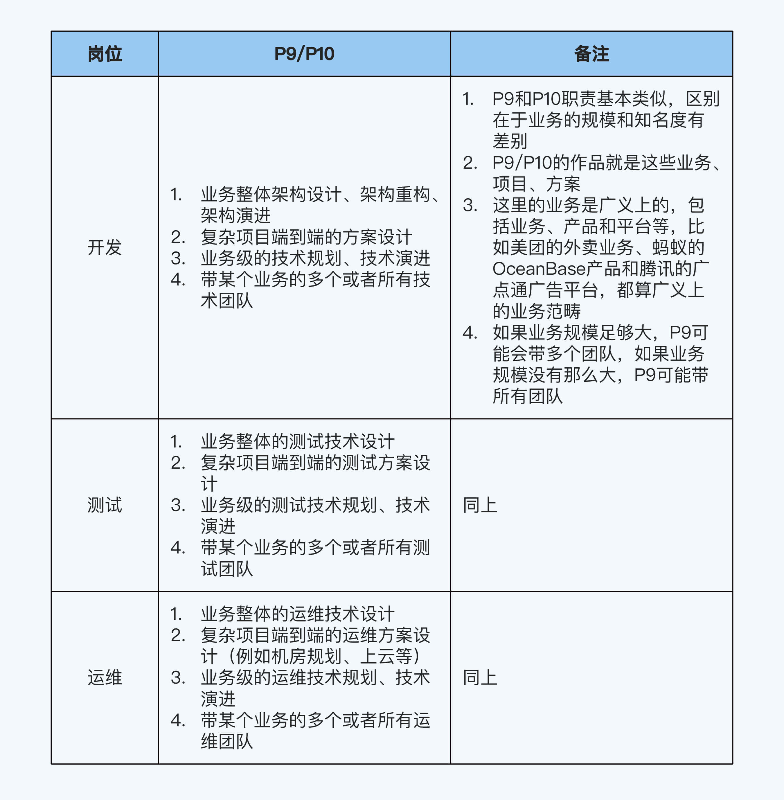
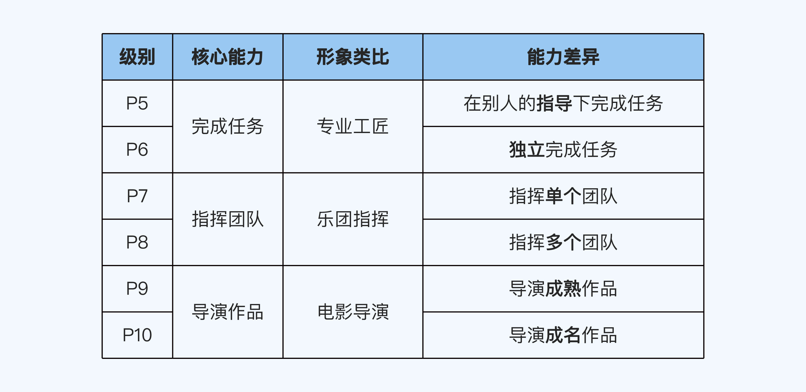

06 | 职级档次：你现在应该具备的核心能力是什么？
你好，我是华仔。
上一讲我介绍了COMD能力模型，让你能够具体拆解一个级别的能力要求，不再纠结于抽象的描述。但你可能还是不清楚每个级别到底要求什么。这些具体要求，我会在课程第二部分，也就是职级详解部分一一介绍。
不过在这之前，我想先通过三个类比带你纵向透视职级档次，对不同档次的核心能力建立一个形象的认知。

P5/P6：专业工匠
P5/P6这一档相当于“专业工匠”，就像木匠、铁匠、粉刷匠一样，核心能力是完成任务。
这里的任务是指每个岗位需要完成的事情，比如开发岗位需要完成代码编写，测试岗位需要完成测试用例执行。
P5和P6的职责一样，比较简单，不需要太多解读。这两个级别的区别是，P5需要在别人的指导下完成工作，而P6可以独立完成工作。其实只要有意愿在技术领域发展，基本上每个人都能达到P6的水平。
P5/P6的核心职责如下表所示。

需要强调的是，这里列举的只是一个岗位的核心职责，并不代表这个岗位只做这些事情，比方说开发岗位的P7/P8也是要参与编码的。
另外，这里只列举了开发、测试和运维这些技术岗位的职责。产品、运营和市场等非技术岗位的同学，也可以根据你掌握的信息来整理你所在岗位的核心职责表格。
P7/P8：乐团指挥
P7/P8这一档相当于“乐团指挥”，核心能力是指挥团队。
为什么我要这么类比呢？因为P7/P8的职责和乐团指挥的职责非常相似。乐团指挥的核心工作职责，具体可以分为三个阶段：
第一阶段是总谱研究，对总谱进行深入细致的研究分析，识别和标注演奏的重点、难点和风险点。
第二阶段是排练准备，明确演奏需要的人手和乐器，根据乐团情况制定排练计划。
第三阶段是正式排练，拆解具体排练步骤（比如个体练习、分声部练习和全体排练等），抓好每一个关键环节的落实，做好风险预防措施，推动整个乐团完成演奏。
P7/P8的任务和乐团指挥非常像，也可以分为三个阶段，跟乐团指挥的三个阶段正好一一对应。你只要把总谱换成团队的工作目标，把人手和乐器换成资源，把演奏排练换成工作目标落地就行了。
首先是分析阶段，对应乐团指挥的总谱研究；然后是计划阶段，对应排练准备；最后是落地阶段，对应正式排练。我把这个对应关系总结在了下面的表格里。

那么P7和P8的区别是什么呢？P7只需要指挥单个团队，而P8往往要指挥多个团队。
另外还需要补充一点，我这里说的“团队”，包括两种类型：
- 狭义上的团队：组织结构上的行政级别团队，比如P7担任的3～10人团队的Team Leader，负责团队管理、团队规划、团队考核和团队建设等管理职责。
- 广义上的团队：为了完成某个目标而成立的虚拟团队（或者说临时团队），比如某个项目投入的人员组成了“项目团队”（由公司立项成立），某个专项任务投入的人员组成了“专项团队”（由管理者安排，比如“研发效能提升工作组”）。
P7/P8的核心职责如下表所示。

P9/P10：电影导演
P9/P10这一档相当于“电影导演”，核心能力是导演作品。
为什么我会这么类比呢，因为P9/P10的工作跟电影导演很像，具体表现在三个方面：
第一，他们的工作都具有一定的规模。
比如说你只是拍一段60秒的vlog，还算不上电影导演；真正的电影导演拍出来的是几十分钟以上，剧本、服饰、化妆、道具、表演、运镜和剪辑都非常成熟的作品。同样地，P5～P8这几个级别的工作都会产出一些成果，但这些成果在规模上还不足以跟P9/P10这个级别相比。
第二，他们都是总决策者。
在一个剧组里，一般情况下导演就是老大，有绝对的话语权。同样地，虽然P6可以指导别人，P7/P8可以带团队，但工作仍然会在很大程度上受到制约，关键的目标制定、资源整合和关键决策的工作，还是得由P9/P10来完成。
具体一点说，P9/P10需要制定有挑战的业务目标；整合不同的团队，包括多个技术团队（比如Android、iOS、前端、Java后端、测试、运维等）和多个业务团队（比如腾讯的广告平台的某个业务，可能涉及QQ、微信和应用宝等多个业务团队）；做出关键决策（例如要做什么、不做什么、先做什么和后做什么等）。
第三，他们都是总负责人。
一部电影作品会打上导演的烙印，甚至呈现出强烈的导演个人风格。电影拍得不好，观众第一个骂的就是导演；拍得好，赞美和荣誉也首先给到导演身上。
同样地，P9/P10的水平、眼界、价值观和做事风格，直接决定了一条业务线的质量，因为这些因素会体现在工作过程中的各种决策里面，决定了最终的呈现效果。
另外，导演往往有自己擅长的题材，比如文艺片、喜剧片；而P9/P10一般也都聚焦于某个业务或者专业领域，比如电商业务、出行业务、安全领域、算法领域，很少有跨领域样样精通的人才。
P9和P10的核心差异在于成果质量。我还是拿电影导演来类比，P9是成熟的导演，能拍出7分以上的作品（基本合格）；P10是成名的导演，能拍出8分以上的作品（比较优质）。
虽然对于P9/P10的工作成果，并没有一个通用的打分机制，但是公司能通过一些硬指标来衡量，最典型的就是直接看业务结果。
如果你负责的业务结果实现了既定的业务目标，那么你就是成熟的导演，可以胜任P9；如果你负责的业务结果按照某个标准（用户量、收入和权威机构的测评等），进入了业界前列，有一定的名气和影响力，那么你就是成名的导演，可以胜任P10。
P9/P10的核心职责如下表所示。

这些类比有什么用
在这一讲中，我使用了“专业工匠”“乐团指挥”和“电影导演”三种形象来类比不同的职级档次，但是这仅仅是针对职责的相似度来说的。这种档次划分对应了行政级别的高低，但不代表艺术成就的高低。比如P9/P10的级别高于P8/P7，但并不意味着电影导演的艺术成就一定高于乐团指挥。
之所以要把职级档次跟你熟悉的职业角色建立联系，是希望通过形象思维的方式帮你快速建立对每个级别的具体认知。以后我们再说到某个级别的时候，你就能一下子抓住它的核心要求。
需要注意的是，这一讲的类比只是宏观层面的特征提炼。如果你想了解每个级别能力的细节要求，还是需要参考课程职级详解部分关于每个级别的详细解读。
因为阿里的级别是业界的“职级硬通货”，辨识度高，认可度高，所以我采用了阿里P5～P9的级别作为例子进行讲解。不管你在大公司还是小公司，不管你公司现在是否有完善的职级体系，如果你想了解自己能力水平在行业内所处的级别，我建议你都对标阿里的职级来估计。
目前网络上已经有一些关于不同公司职级怎么对应的文章；而且我也专门准备了一期加餐，根据我的面试经验，提炼了几个典型互联网大厂的职级对应关系。这些信息你都可以参考。
小结
现在，我们回顾一下这一讲的重点。P5～P10的6个等级，可以根据能力特征分成3个档次，分别对应三种职业角色。
- P5/P6相当于专业工匠，核心能力是执行任务，P5和P6的差别在于能否独立完成任务。
- P7/P8相当于乐团指挥，核心能力是指挥团队，P7和P8的差别在于指挥的是单个团队还是多个团队。
- P9/P10相当于电影导演，核心能力是导演作品，P9和P10的差别在于导演出来的是成熟的作品还是成名的作品。
我把这个对应关系总结在了下面这个表格里，供你参考。

最后再补充一点，高级别的能力要求包含低级别的能力要求。比如P9的核心能力是“导演成熟作品”，但肯定也要具备P8要求的“指挥多个团队”的能力。
思考题
这就是今天的全部内容，留一道课后思考题给你吧。电影学院有专门的导演专业，学生可以不成为演员而直接学习如何成为导演。那么在职场晋升体系中，我们为什么不能直接学习P9/P10的技能，然后直接晋升P9/P10呢？
欢迎你把答案写到留言区，和我一起讨论。相信经过深度思考的回答，也会让你对知识的理解更加深刻。